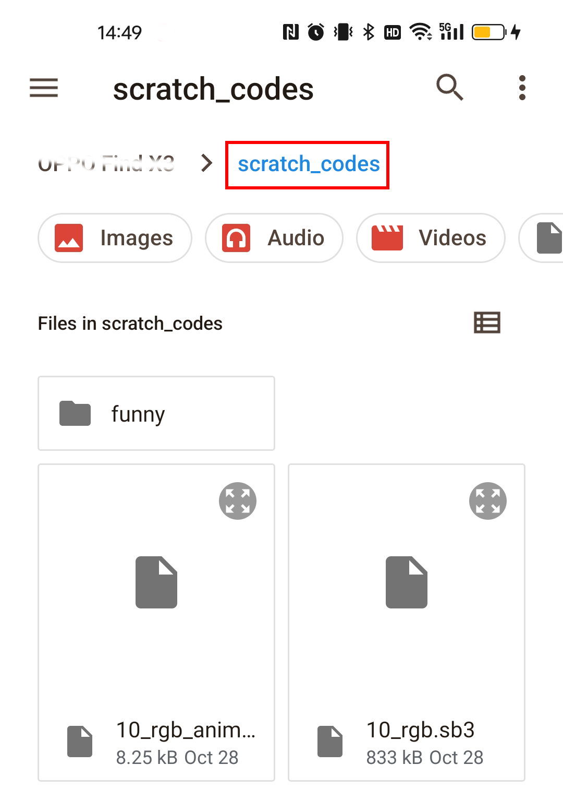
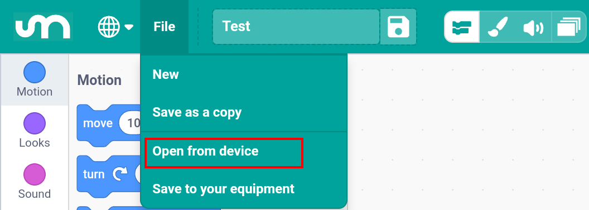
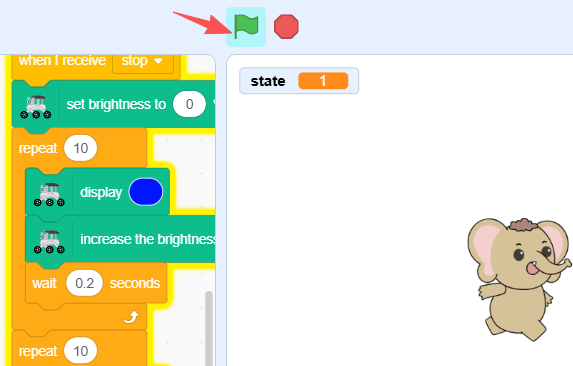

Quick Start with Scratch
In this chapter, you’ll learn how to quickly open and run example projects in Scratch (Mammoth Coding) to see your GalaxyRVR in action.
If you want to learn how to create these scripts from scratch, please refer to the Programming with Scratch chapter.
Note
The GalaxyRVR’s R3 board comes with firmware that supports the RoboPilot App and Mammoth Coding.
If you have overwritten the firmware and need to restore communication, follow 3. Updating the R3 Board Firmware.
How to Quickly Open a Scratch Example
Download the example codes from the link below:
Extract the downloaded file and transfer the
scratch_codesfolder to your mobile device. You can use any file transfer tool, such as ES File Explorer or File Transfer Assistant.
Search for Mammoth Coding on Google Play or the Apple App Store and install it.

Before using the GalaxyRVR for the first time, fully charge the battery with the supplied Type-C USB cable. After charging, turn the power on.
To start the ESP32 CAM, switch the mode to Run and press the Reset button on the R3 board. The bottom light strip will begin flashing to indicate a successful startup.
Note
If the bottom light strip shows a flashing light of any color other than green, your GalaxyRVR needs a firmware update. Please refer to Update Firmwares.
Connect your mobile device to the GalaxyRVR’s WiFi network.
The network name (SSID) is
GalaxyRVRand the password is12345678.If you see a warning stating “No Internet access,” please choose the option to “Stay connected.”

In the app, tap File > Open from device to browse local files.

Select a
.sb3file to open it.Tap the the green flag icon to start the script.

{kind=link}
{kind=link}
Examples
Basic Projects
These projects are the basic courses for controlling the GalaxyRVR with Mammoth Coding. They will guide you step by step on how to utilize GalaxyRVR.
3_move.sb3: Control your GalaxyRVR’s movement in real time using direction keys.4_ultrasonic.sb3: The rover moves forward and automatically avoids obstacles using the ultrasonic module.5_ultra_animate_jump.sb3: Creates an animated scene of the rover joyfully moving across the Martian surface.6_ir_obstacle_avoid.sb3: The rover moves forward and avoids obstacles using IR sensors.7_ir_obstacle_avoid_animate.sb3: Control the rover sprite to dodge rocks on the Martian surface by triggering IR sensors with your hands.8_ir_ultrasonic_avoid.sb3: The rover uses ultrasonic and IR sensors together to smoothly navigate around obstacles.9_ir_ultrasonic_follow.sb3: The rover follows you: it approaches when you stand in front, turns toward you when beside, and stops when you move away.10_rgb.sb3: Tap a colored ball to make the rover’s RGB lights glow in that color.10_rgb_animate.sb3: The rover moves and changes light color according to the direction keys pressed.1scratch_servo.sb3: Use the arrow keys to adjust the rover’s camera angle; click to reset its position.1scratch_servo_stage.sb3: Touch and drag the on-screen arrow to aim the rover’s camera with smooth, real-time response.12_camera.sb3: View the live camera feed from your rover’s perspective as it explores.13_realtime_control.sb3: Control your rover’s movements and lights in real time through Scratch.
Fun Projects
These fun Scratch projects don’t require the GalaxyRVR.
You can find them all in the scratch_codes/fun/ folder.
1_scratch_balloon.sb3: Inflate the balloon by blocking the left IR sensor; don’t let it burst or fall!2_flappy_parrot.sb3: Control the parrot’s flight using your hand above the ultrasonic sensor to dodge bamboo poles.3_shooting.sb3: Aim and shoot targets using the obstacle avoidance module.4_eat_apple.sb3: Guide the beetle to the apple using hand gestures detected by the left IR sensor.5_fishing.sb3: Catch fish by blocking the left IR sensor at the right time.6_sensitive_ball.sb3: Move the ball up or down with your hand above the ultrasonic sensor; trigger sounds and lights when it touches a line.7_tap_white_tile.sb3: Tap black tiles using two IR sensors to score points — avoid the white ones!